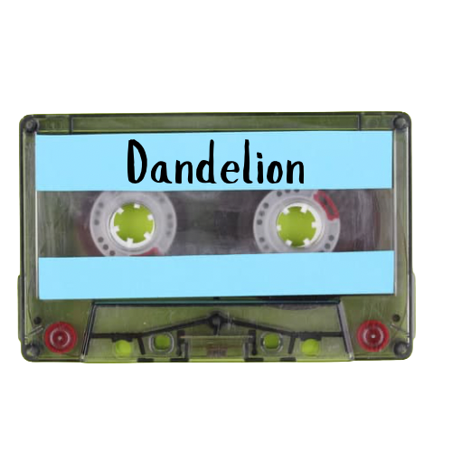
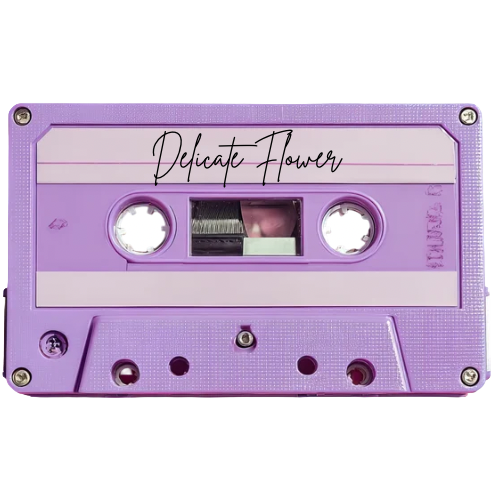

Habitual Strangers Music

Dandelion
Originally released by our lead singer, Jessica Lloyd, on her album Spiritual Cabaret, "Dandelion" is now performed by Habitual Strangers.
FireBurn
An original with a heavier rock edge.

Delicate Flower
Piano-heavy with expressive vocals, melodic guitar, and an indie-pop edge, "Delicate Flower" brings a different flavor to the Habitual Strangers.
What's Up
Our take on the 4 Non Blondes classic, "What's Up?" is a crowd favorite and a staple of our live shows.